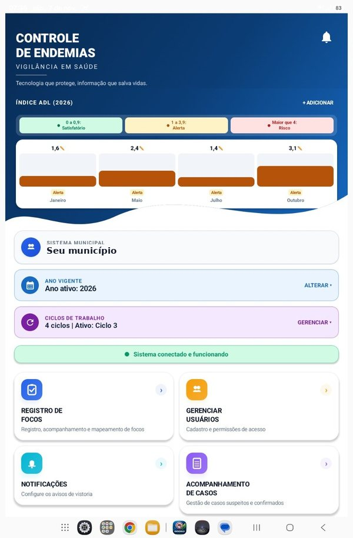

Painel Gerencial
Tela inicial com Indicador ADL e Atalhos
Visão panorâmica imediata para o agente e o coordenador sanitário ao abrir o sistema.
- Cálculo automático do índice IIP/ADL por período (faixas de satisfatório, alerta e risco).
- Indicação clara do ano vigente e ciclo operacional ativo.
- Acesso direto a focos, vistorias, notificações e acompanhamento de casos.

Indicador ADL por Faixa